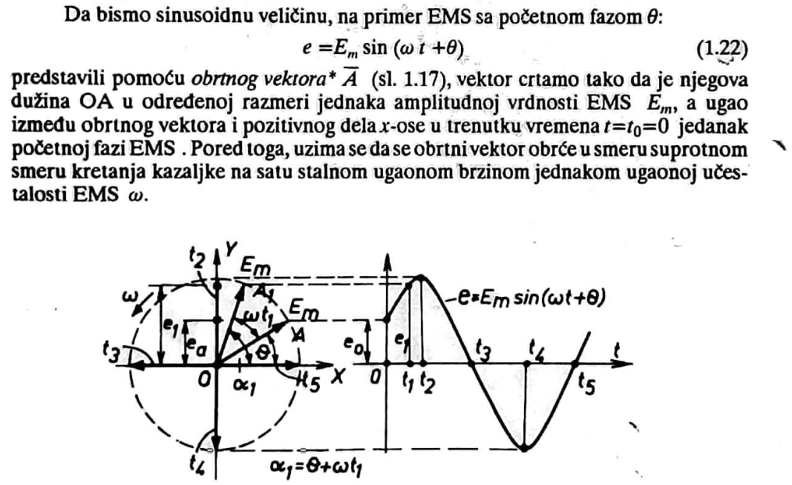

Predstavljanje naizmeničnih veličina
Prostoperiodične veličine mogu se predstaviti na više načina:
- 1.Analitički
- pomoću jednačina
- 2.Grafički
- Pomoću krivih koje se nazivaju sinusoide
- 3.Pomoću obrtnih vektora
- 4.Kao kompleksni brojevi

Često se umesto pojma "Obrtni vektor" koristi fazor
Predstvljanje prostoperiodičnih veličina kompleksnim brojevima
Primena vektorskih dijagrama za proučavanje kola sa prostoperiodičnim strujama,
bez obzira na jednostavnost i preglednost, ne daje uvek dovoljnu tačnost pri proračunima. Predstavljanje sinusoidnih veličina pomoću
kompleksnih brojeva(kompleksni metod) udružuje jednostavnost vektorskih dijagrama sa mogućnošću se proračuni vrše sa zadatim stepenom tačnosti
Kompleksni metod zasnovan je na činjenici da se ma koji vektor može prikazati u kompleksnoj ravni i predstaviti
odgovarajućim kompleksnim brojem. To ima za sobom veoma važnu posledicu da se za kola sa prostoperiodičnim strujama mogu primeniti Omov i Kirhofovi zakoni,
kao i metodi proračuna elektrilnih kola zasnovani na ovim zakonima u istom obliku kao i za kola jednosmerne struje.